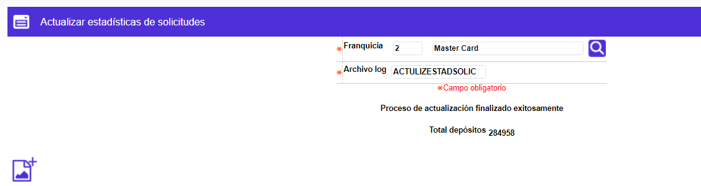

Actualizar estadísticas de solicitudes
Mediante esta función la entidad actualiza la información estadística tanto por franquicia como por tipo de solicitud y tipo de producto, generando información correspondiente a la cantidad de solicitudes realizadas y los promedios de duración de dichas solicitudes en cada etapa.
El sistema despliega el siguiente formulario:

|
Franquicia |
Campo obligatorio que posee lista de valores poblada a través de la opción Franquicias, de la que debe seleccionarse aquella para la que se desee actualizar las estadísticas de solicitudes. |
|
Archivo log |
Campo obligatorio en el que la entidad asigna un nombre cualquiera a dicho archivo y este quedará ubicado en el servidor, en la ruta que haya definido la misma a través de la opción Ubicación archivos. |
Aceptar: Luego de que el funcionario de la entidad esté seguro de realizar la tarea de actualización oprime este botón para su respectiva ejecución.
Total registros: Luego de efectuada la ejecución, aparecerá la cantidad de registros de solicitudes existentes en el sistema a la fecha de actualización.